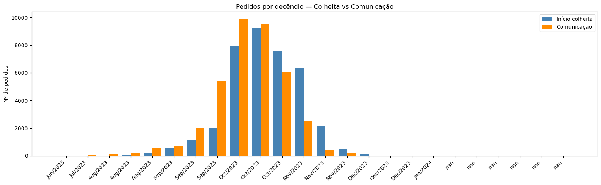
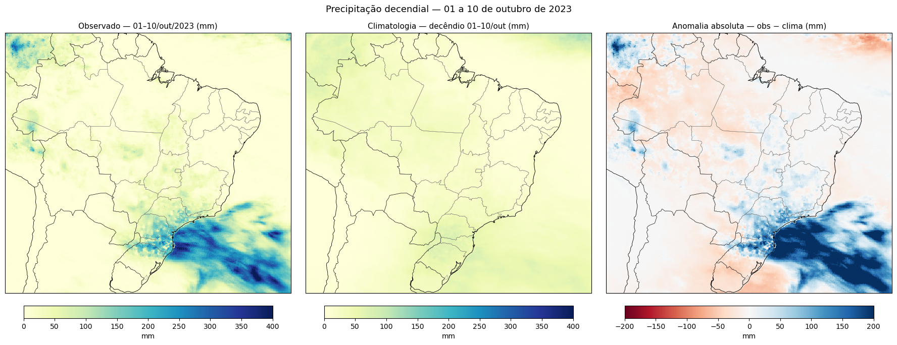
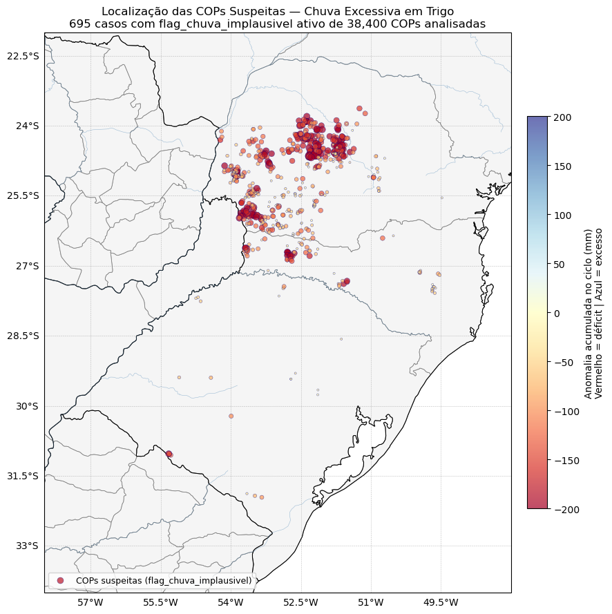
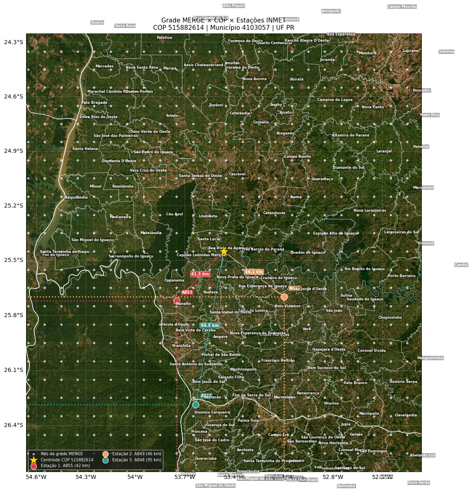
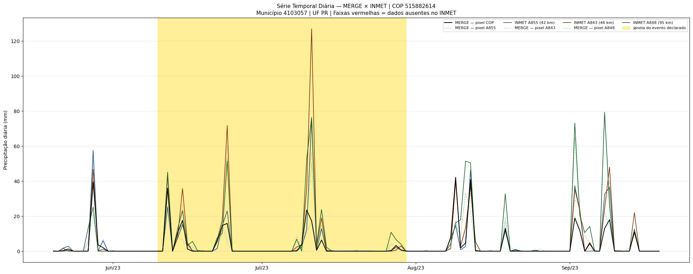
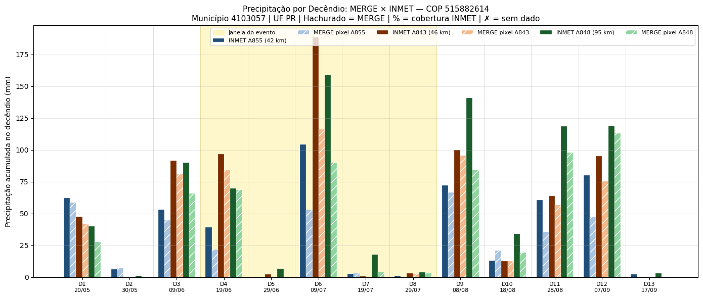
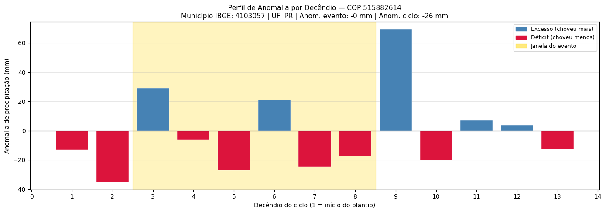
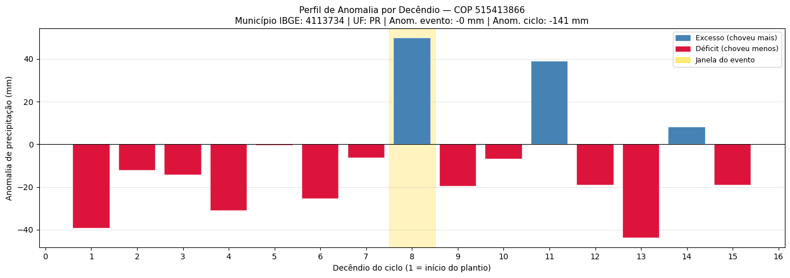
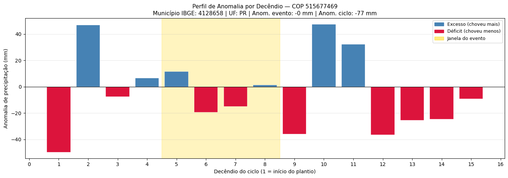

Aula 2 — plausibilidade meteorológica: chuva excessiva em trigo
Esta aula replica e refina o pipeline da Aula 1 — plausibilidade meteorológica: seca em soja, agora aplicado a Chuva Excessiva × Trigo. Quatro novidades importantes:
Lógica invertida — suspeito = anomalia negativa (choveu menos do que o normal num evento declarado como excesso);
Mapa interativo Folium com
ipywidgets(dropdown de decêndios) sobrepondo anomalia raster + COPs;Shift de 12h explícito no INMET para alinhar o “dia pluviométrico” com o MERGE;
Flag refinado com fallback INMET → MERGE — a estação INMET é preferida quando tem cobertura ≥ 70%, senão usa MERGE.
Dados utilizados
Mesma estrutura da Aula 1 — plausibilidade meteorológica: seca em soja, com bounding box maior
(Brasil inteiro, LON [-75, -30], LAT [-35, 6]) porque chuva
excessiva tem casos no Centro-Oeste, Nordeste e Sudeste.
Período: 2023-04-01 → 2024-04-30 (ciclo do trigo + buffer).
Passo 0 — carregamento + shift de 12h do INMET
A sutileza do “dia pluviométrico”
MERGE usa timestamp
12:00 UTCrepresentando o acumulado das 24 h que terminam às 12:00 UTC daquele dia.Se somarmos todas as 24 leituras horárias do INMET em uma data-calendário (00:00 a 23:00), estaremos somando as 12 h iniciais do MERGE-dia A com as 12 h finais do MERGE-dia B.
A correção é deslocar a hora em +12 h antes de agregar:
df_inmet_raw = open_inmet(startdate, enddate)
prec = df_inmet_raw[['COD', 'PREC']].copy()
prec.index = prec.index + pd.Timedelta(hours=12) # alinha com MERGE
prec['DATA'] = prec.index.normalize()
df_inmet = (prec.groupby(['DATA', 'COD'])['PREC']
.sum().reset_index())
Passo 1 — recorte temático: chuva excessiva em trigo
chuva_trigo_full = df_sicor[
(df_sicor['nome_evento'] == 'Chuva excessiva') &
(df_sicor['produto'] == 'trigo')
].copy()
chuva_trigo = (df_sicor[
(df_sicor['nome_evento'] == 'Chuva excessiva') &
(df_sicor['produto'] == 'trigo') &
(df_sicor['dt_fim_plantio'] >= startdate) &
(df_sicor['dt_fim_colheita'] < enddate)
].sort_values(['ref_bacen', 'nu_ordem', 'nu_indice'])
.drop_duplicates(subset=['ref_bacen', 'nu_ordem'], keep='first')
.copy())
Passo 2 — distribuição temporal das COPs
Para guiar a análise espacial do Passo 3, primeiro verificamos a distribuição temporal (comunicação × colheita) em decêndios:
chuva_trigo['decendio'] = chuva_trigo['dt_comunicacao'].apply(
lambda d: d.replace(day=1 if d.day <= 10 else
11 if d.day <= 20 else 21))
chuva_trigo['dec_colheita'] = chuva_trigo['dt_inicio_colheita'].apply(
lambda d: d.replace(day=1 if d.day <= 10 else
11 if d.day <= 20 else 21))

Figura 66 - Distribuição decendial de comunicação e início de colheita. O lag entre as duas curvas é importante — em trigo, a chuva no final do ciclo (perto da colheita) causa germinação na espiga [80].
🖼️ Imagem sugerida (IMG-TODO)
- Imagem ideal:
Foto de espigas de trigo com germinação na própria espiga (grãos brotando antes da colheita) após chuva excessiva.
- Função:
torna concreto o dano agronômico — germinação na espiga — descrito na legenda anterior como consequência da chuva no fim do ciclo.
- Busca sugerida:
“pre-harvest sprouting wheat ear”; “germinação na espiga trigo”
- Fonte provável:
Embrapa, Wikimedia Commons
- Facilidade:
média
Passo 3 — mapa interativo: anomalia raster + COPs
def anomalia_dec(TARGET_DATE='2023-10-11'):
"""Anomalia decendial encerrando em TARGET_DATE."""
DEC_INI = pd.Timestamp(TARGET_DATE) - dt.timedelta(days=10)
DEC_FIM = pd.Timestamp(TARGET_DATE)
obs_dec = ds_prec.sel(time=slice(DEC_INI, DEC_FIM))['rdp'].sum('time')
clima_dec = (ds_prec_clima['pmed']
.sel(time=ds_prec_clima.time.dt.dayofyear
.isin(range(DEC_INI.dayofyear, DEC_FIM.dayofyear + 1)))
.sum('time'))
return obs_dec, (obs_dec - clima_dec).values
def array_to_png_base64(data, cmap, vmin, vmax):
norm = mcolors.Normalize(vmin=vmin, vmax=vmax)
flipped = np.flipud(data)
rgba = plt.colormaps[cmap](norm(flipped))
rgba[np.isnan(flipped), 3] = 0 # NaN → transparente
# ... gera PNG em memória e codifica em base64 ...
O widget usa ipywidgets.Dropdown para escolher o decêndio e
recompõe o mapa Folium em cada seleção, sobrepondo:
uma camada raster colorida (anomalia, escala
RdBu±200 mm);círculos azuis para cada COP do decêndio.
Versão estática para o decêndio chave (01-10/out/2023):

Figura 67 - Decomposição visual completa do conceito de anomalia. Observado (esquerda) − Climatologia (centro) = Anomalia (direita).
Passos 4-8 — anomalias e métricas
Mesma sequência da Aula 1 — plausibilidade meteorológica: seca em soja: data_ref_evento, top 3
estações INMET, anomalia na janela do evento, anomalia decendial do
ciclo, métricas agregadas. A diferença está nas métricas
agregadas — para chuva, anom_maxima_mm (não anom_minima_mm)
e frac_decendios_chuva (fração com excesso).
Passo 9 — flags INVERTIDOS
Lógica invertida
Aula 1 (Seca): suspeito = anomalia positiva;
Aula 2 (Chuva): suspeito = anomalia ≤ 0 (choveu menos que o normal num evento declarado como excesso).
chuva_trigo['flag_chuva_sem_anom_evento'] = (
chuva_trigo['anom_evento_mm'].notna() &
(chuva_trigo['anom_evento_mm'] <= 0)
)
chuva_trigo['flag_chuva_sem_anom_ciclo'] = (
chuva_trigo['anom_acum_ciclo_mm'].notna() &
(chuva_trigo['anom_acum_ciclo_mm'] <= 0)
)
chuva_trigo['flag_chuva_implausivel'] = (
chuva_trigo['flag_chuva_sem_anom_evento'] &
chuva_trigo['flag_chuva_sem_anom_ciclo']
)
Passo 10 — mapa dos casos suspeitos

Figura 68 - Casos com flag_chuva_implausivel ativos. Como o flag isola
anomalias negativas, os pontos ficam predominantemente em
vermelho — “declarou chuva excessiva, mas choveu menos que o
normal no ciclo”.
Passo 11 — diagnóstico individual MERGE × INMET
Mesma sequência da Aula 1, mas com destaque dos dias NaN do INMET via faixas verticais vermelhas — sinaliza onde a estação deixa de ser confiável:

Figura 69 - Mapa de contexto — grade MERGE, centróide COP, estações INMET ligadas por linhas com rótulo de distância.

Figura 70 - Série diária com faixas vermelhas marcando dias em que o INMET está NaN. Lacunas grandes no INMET reduzem a confiança em conclusões baseadas nele.

Figura 71 - Comparativo MERGE × INMET por decêndio. Discordâncias podem indicar evento convectivo local que o MERGE suavizou.
Passo 12 — top 3 casos suspeitos

Figura 72 - Perfil de anomalia decendial — cores invertidas em relação à Aula 1: azul = excesso (compatível); vermelho = déficit (suspeito para chuva excessiva).

Figura 73 - Caso 2.

Figura 74 - Caso 3.
Passo 13 — flag refinado: fallback INMET → MERGE
O MERGE é uma estimativa suavizada combinando satélite e estações [63]. Em áreas com boa cobertura INMET, o dado in situ é padrão-ouro. A estratégia:
def precip_inmet_hierarquica(cod_stns, d_ini, d_fim, df_inmet, df_coords,
ds_prec_clima, doy_para_idx, threshold=0.70):
"""Tenta INMET nas 3 estações em ordem; cai para MERGE se nenhuma
atingir cobertura >= threshold."""
for cod in cod_stns:
if pd.isna(cod):
continue
serie = (df_inmet[(df_inmet['COD'] == cod) &
(df_inmet['DATA'] >= d_ini) &
(df_inmet['DATA'] <= d_fim)]['PREC'])
cobertura = serie.notna().mean()
if cobertura >= threshold:
# ... extrai climatologia no pixel da estação cod ...
return prec_obs, prec_clim, cod, cobertura
return np.nan, np.nan, None, 0.0 # fallback p/ MERGE
Em seguida construímos os flags refinados e tabulamos contra os flags do Passo 9. A tabela cruzada produz quatro cenários:
refinada = False |
refinada = True |
|
|---|---|---|
antiga = False |
Ambas: não suspeito |
Alerta extra (INMET sinaliza) |
antiga = True |
Atenuação (INMET não confirma) |
Suspeito robusto |
Os casos em “suspeito robusto” são a prioridade operacional.
Próximos passos
Aula 3 — plausibilidade meteorológica: geada em trigo — terceiro evento, com TMIN e score multidimensional 0-100.
Análise de recorrência meteorológica em áreas e culturas — análise regional de longo prazo.